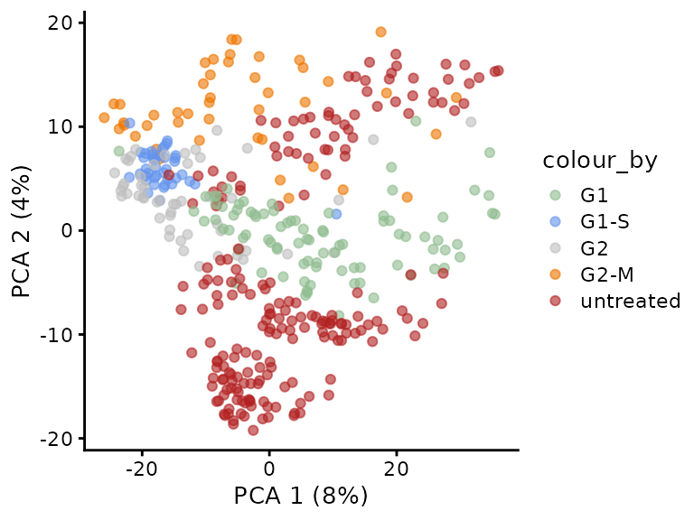

Replication of the cell cycle state study (Brunner et al. 2021)
Christophe Vanderaa, Computational Biology, UCLouvain
Laurent Gatto, Computational Biology, UCLouvain
5 October 2022
brunner2022.RmdIntroduction
The study by Brunner et al. on the cell cycle is the first mass spectrometry-based single-cell proteomics (SCP) experiment that acquired hundreds of single cells using a label-free protocol (Brunner et al. (2022)). The data was acquired using a newly designed mass spectrometer that will later be released by Bruker as the timsTOF-SCP device. This instrument can be used for data dependent acquisition (DDA) or data independent acquisition (DIA). Single-cell samples were acquired using the latter and the DIA-NN software (Demichev et al. (2020)) was used to identify and quantify the MS data.
Let’s first load the replication package to make use of some helper functions. Those functions are only meant for this replication vignette and are not designed for general use.
library("SCP.replication")
scp and the plexDIA data analysis workflow
The code provided along with the article can be retrieved from this GitHub repository. It provides the python code used to reproduce the article’s analysis. The objective of this vignette is to replicate the analysis script using R code. We focus on standardized, easy-to-read, and well documented code. Therefore, our first contribution is to formalize the data processing into a conceptual flow chart.
Overview of the processing workflow by Derks et al.
This replication vignette relies on a data framework dedicated to SCP data analysis that combines two Bioconductor classes (Vanderaa and Gatto (2021)):
- The
SingleCellExperimentclass provides an interface to many cutting edge methods for single-cell analysis - The
QFeaturesclass facilitates manipulation and processing of MS-based quantitative data.
The scp
vignette provides detailed information about the data structure. The
scp package extends the functionality of
QFeatures for single-cell application. scp
offers a standardized implementation for single-cell processing
methods.
The required packages for running this workflow are listed below.
## Core packages of this workflow
library("scp")
library("scpdata")
## External package for SingleCellExperiment objects
library("scater")
library("scuttle")
## Utility packages for data manipulation and visualization
library("tidyverse")
library("patchwork")
scpdata and the brunner2022 dataset
We also implemented a data package called scpdata (Vanderaa and Gatto (2022)). It distributes
published SCP datasets, such as the brunner2022 dataset.
The datasets were downloaded from the data source provided in the
publication and formatted to a QFeatures object so that it
is compatible with our software. The underlying data storage is based on
the ExperimentHub package that provides a cloud-based
storage infrastructure.
The brunner2022 dataset is provided at different levels
of processing:
- The .d files that were generated by the
mass-spectrometer. This data is not included in
scpdata. - The DIA-NN main output report table that contains the results of the spectrum identification and quantification.
- The DIA-NN protein group matrix: normalised quantities for protein groups, filtered at 1% FDR.
- Other DIA-NN matrix: normalised quantities for
precursors, gene groups or unique genes, filtered at 1% FDR. These files
were not added to
scpdata.
More information about the DIA-NN output tables can be found in the corresponding documentation.
The workflow starts with the protein group matrix and will replicate Figure 4 B, C and D from the original article. Note that the script did not mention which input file was used and we assumed from the methods section that the protein group matrix was used.
We formatted the brunner2022 dataset following the
scp data framework. The formatted data can be retrieved
from the scpdata package using the
brunner2022() function. All datasets in
scpdata are called after the first author and the date of
publication. More information about the data and how it was processed
can be find in ?brunner2022.
(brunner <- brunner2022())
## An instance of class QFeatures containing 435 assays:
## [1] D:\Andreas_Brunner\Projects\SingleCellProteomics\202109_WorkHere\SingleCells\SingleShots_RawData\20201009_TIMS04_Evo07_AnBr_1Cell_HeLa_NB_01_S3-G2_1_3873.d: SingleCellExperiment with 3772 rows and 1 columns
## [2] D:\Andreas_Brunner\Projects\SingleCellProteomics\202109_WorkHere\SingleCells\SingleShots_RawData\20201009_TIMS04_Evo07_AnBr_1Cell_HeLa_NB_02_S3-G3_1_3874.d: SingleCellExperiment with 7759 rows and 1 columns
## [3] D:\Andreas_Brunner\Projects\SingleCellProteomics\202109_WorkHere\SingleCells\SingleShots_RawData\20201009_TIMS04_Evo07_AnBr_1Cell_HeLa_NB_03_S3-G4_1_3875.d: SingleCellExperiment with 4481 rows and 1 columns
## ...
## [433] D:\Andreas_Brunner\Projects\SingleCellProteomics\202109_WorkHere\SingleCells\SingleShots_RawData\20201126_TIMS04_Evo07_SA_ADB_1cell_HeLa_UB_98_S2-C2_1_5109.d: SingleCellExperiment with 2569 rows and 1 columns
## [434] D:\Andreas_Brunner\Projects\SingleCellProteomics\202109_WorkHere\SingleCells\SingleShots_RawData\20201126_TIMS04_Evo07_SA_ADB_1cell_HeLa_UB_99_S2-C3_1_5110.d: SingleCellExperiment with 2327 rows and 1 columns
## [435] proteins: SingleCellExperiment with 2476 rows and 434 columnsThe data are stored in a QFeatures object. In total, it
contains 435 different SingleCellExperiment objects that we
refer to as assays. Each assay contains expression data
along with feature metadata. Each row in an assay represents a
feature, in this case a precursor or a protein
depending on the assay. Each column in an assay represents a
sample. Each acquisition contains 1 cell, hence the
precursor data contains 1 column per acquisition.
Using plot(), we can have a quick overview of the
assays.
plot(brunner)
## Warning in plot.QFeatures(brunner): The QFeatures object contains many assays.
## You may want to consider creating an interactive plot (set 'interactive = TRUE')This figure is crowded, you can use
plot(brunner, interactive = TRUE) to interactively explore
this map. However, we can see that all precursor assays in the top of
the figure are linked to the protein data.
Note that we inferred sample annotations from the file names. These
are accessible from the colData.
Filter cells
The authors first perform a sample quality control to make sure all
cells have at least 600 quantified proteins. To perform this, we rely on
perCellQCMetrics() from the scuttle package.
To use this function we must first extract the assay we want to apply
the function on, using double bracket subsetting ([[).
sce <- brunner[["proteins"]]Next the function counts the number of features that are not zero,
but missing data is encoded as NA. We therefore impote
missing data with zero using impute() from the
QFeatures package.
sce <- impute(sce, method = "zero")We can now apply the QC function that will compute 3 metrics: the
total abundance recorded per cell (sum and
total, they are the same) and the number detected proteins
per cell (detected).
cellqc <- perCellQCMetrics(sce, assay.type = 1)
colnames(cellqc)
## [1] "sum" "detected" "total"Next, we insert the computed metrics in the colData.
This allows to use subsetByColData() and enable to subset
single cells with 600 or more detected proteins.
Filter proteins
The authors then filter for proteins that are detected in at least
15% of the cells. We apply the same procedure, but using
perFeatureQCMetrics()
sce <- brunner[["proteins"]]
sce <- impute(sce, method = "zero")
protqc <- perFeatureQCMetrics(sce, assay.type = 1)
colnames(protqc)
## [1] "mean" "detected"perFeatureQCMetrics() computes the mean abundance for
each protein (mean) and the detection rate across all cells
(detected). Since this information is related to features,
we must insert it in the rowData. This is a bit more
complicated than for the colData since each assay has its
own specific rowData. The QC metric we computed are related
to the protein level and should only be included for the
proteins assay. This can be done by providing a list. The
name of the elements will indicate in which assay the
rowData must be added. Columns of protqc are
automatically added based on the protein names (see details in
?QFeatures-class for more details).
rowData(brunner) <- List(proteins = protqc)Since the metrics are now in the rowData, we cannot use
subsetByColData. Instead, we use
filterFeatures() from the QFeatures package
that will automactilly apply the filter on the rowData of
each assay. Since detected is only available for proteins,
we provide keep = TRUE to ignore the filter and hence keep
the features for the other assays.
brunner <- filterFeatures(brunner, ~ detected > 0.15,
keep = TRUE)Performance assessment
In Figure 4 B and C of the original paper, the authors assessed the analytical performance of their technology for single-cell samples. The cells were analysed at different cell cycle stages thanks to thymidine and nocodazole block. We recode the annotation to match the corresponding cell cycle stage.
brunner$CellCycleStage <- recode(brunner$CellCycleStage,
TB = "G1-S",
NB = "G2-M",
UB = "untreated")
table(brunner$CellCycleStage)
##
## G1 G1-S G2 G2-M untreated
## 87 41 52 45 203The counts above are very close to those reported in the legend of
Figure 4C. We next plot the number of quantified proteins per cell. This
is already available from the colData. Using
ggplot2, we replicate Figure 4B.
data.frame(colData(brunner)) %>%
rownames_to_column("id") %>%
ggplot() +
aes(y = detected,
fill = CellCycleStage,
color = CellCycleStage,
x = id) +
geom_bar(stat = "identity") +
facet_grid(~ CellCycleStage, scales = "free_x", space = "free_x") +
ylab("Quantified proteins") + xlab("") +
theme(axis.text.x = element_blank(),
axis.ticks = element_blank())This plot is very similar to the original figure, except there here is the additional `“untreated”’ category.
We also plot the total signal per cell that replicated Figure 4C.
data.frame(colData(brunner)) %>%
ggplot() +
aes(y = sum,
x = CellCycleStage,
fill = CellCycleStage) +
geom_boxplot() +
theme_minimal()Log-Transformation
The protein data is then log2-transformed using
logTransform(). This will add a new assay that we call
proteins_log.
(brunner <- logTransform(brunner, i = "proteins",
name = "proteins_log",
base = exp(1), pc = 1))
## An instance of class QFeatures containing 436 assays:
## [1] D:\Andreas_Brunner\Projects\SingleCellProteomics\202109_WorkHere\SingleCells\SingleShots_RawData\20201009_TIMS04_Evo07_AnBr_1Cell_HeLa_NB_01_S3-G2_1_3873.d: SingleCellExperiment with 3772 rows and 1 columns
## [2] D:\Andreas_Brunner\Projects\SingleCellProteomics\202109_WorkHere\SingleCells\SingleShots_RawData\20201009_TIMS04_Evo07_AnBr_1Cell_HeLa_NB_02_S3-G3_1_3874.d: SingleCellExperiment with 7759 rows and 1 columns
## [3] D:\Andreas_Brunner\Projects\SingleCellProteomics\202109_WorkHere\SingleCells\SingleShots_RawData\20201009_TIMS04_Evo07_AnBr_1Cell_HeLa_NB_03_S3-G4_1_3875.d: SingleCellExperiment with 4481 rows and 1 columns
## ...
## [434] D:\Andreas_Brunner\Projects\SingleCellProteomics\202109_WorkHere\SingleCells\SingleShots_RawData\20201126_TIMS04_Evo07_SA_ADB_1cell_HeLa_UB_99_S2-C3_1_5110.d: SingleCellExperiment with 2327 rows and 1 columns
## [435] proteins: SingleCellExperiment with 2476 rows and 428 columns
## [436] proteins_log: SingleCellExperiment with 2476 rows and 428 columnsImputation by downshifted norm
The final step is missing data imputation. As mentioned above, the
QFeatures package has a function to perform imputation. The
authors used imputation by sampling from a down-shifted normal
distribution. Unfortunately, this method is not available, but we can
provide it as a custom function.
imputeByDownShiftedNormal <- function(x, scale = 0.3, shift = 1.8) {
m <- mean(x, na.rm = TRUE)
std <- sd(x, na.rm = TRUE)
nmis <- sum(is.na(x))
repl <- rnorm(nmis, mean = m - shift * std, sd = scale * std)
x[is.na(x)] <- repl
x
}We supply the custom function to impute()
brunner <- impute(brunner, i = "proteins_log",
name = "proteins_dsnImpd",
FUN = imputeByDownShiftedNormal)The last assay, proteins_dsnImpd, represents the final
step of the data processing workflow.
PCA
We finally perform dimension reduction using PCA to replicate Figure
4D. This is performed by runPCA() and
plotPCA() from the scater package. They work
on SingleCEllExperiment objects and to include the sample
annotation, we extract the last assay using
getWithColData().
sce <- getWithColData(brunner, "proteins_dsnImpd")
## Warning: 'experiments' dropped; see 'metadata'
sce <- sce[, sce$CellCycleStage != "untreated"]
set.seed(1234)
sce <- runPCA(sce, ncomponents = 50,
ntop = Inf,
scale = TRUE,
exprs_values = 1,
name = "PCA")
plotPCA(sce, colour_by = "CellCycleStage") +
scale_colour_manual(values = c("darkseagreen", "cornflowerblue",
"grey", "darkorange2")) This plot shows similar trends to the original figure although the
percent variability explained is lower in our replication (PC1: 10 vs
14% and PC2: 3 vs 4 %).
This plot shows similar trends to the original figure although the
percent variability explained is lower in our replication (PC1: 10 vs
14% and PC2: 3 vs 4 %).
An important aspect of the data analysis that the authors overlooked is the assessment of batch effect. We extracted the (presumably) date of acquisition from the file names and plot these on the PCA.
plotPCA(sce, colour_by = "Date") +
scale_colour_manual(values = c("gold", "gold3", "orange2", "orange4"))
Surprisingly, we observe the different cell cycle stages where acquired in distinct batches. For instance, all G1 cells where acquired on November 21, 2020 and all G2 cells where acquired on November 13, 2020. This is an issue because batch effects can dramatically influence quantifications in proteomics experiments, especially SCP (Vanderaa and Gatto (2021)). This experimental design does not allow for batch correction and hence we cannot distinguish the proportion of variance that is explained by technical and biological factors…
In the article, the authors argue:
In addition to these drug-perturbed cells, we measured more than 200 untreated ones from two independent cell culture batches. The proteomes of these asynchronous cells distributed well across the cell cycle states, while different passage batches were enriched in the G1 and G2 phase
They refer to supplementary Figure EV2E. Let’s replicate this figure:
sce <- getWithColData(brunner, "proteins_dsnImpd")
## Warning: 'experiments' dropped; see 'metadata'
set.seed(1234)
sce <- runPCA(sce, ncomponents = 50,
ntop = Inf,
scale = TRUE,
exprs_values = 1,
name = "PCA")
plotPCA(sce, colour_by = "CellCycleStage") +
scale_colour_manual(values = c("darkseagreen", "cornflowerblue",
"grey", "darkorange2", "firebrick"))
Indeed, we also find that some untreated cells are close to G1 cells in PCA space and other are closer to the G2-M phase. But let’s look at the batch effect.
plotPCA(sce, colour_by = "Date") +
scale_colour_manual(values = c("gold", "gold3", "orange2", "orange4","red4"))The PCA better explains the acquisition date than the cells cycle stage, refuting the argument stated above. A better design would have been to randomize the cell cycle stages across several acquisition runs. Obviously, effect of cell culture batch or FACS sorting may be responsible as well and are practically inevitably. Spreading sample preparation over several culture and FACS sorting batches would have allowed to disentangle the biological and technical variability.
Conclusion
This vignette present a standardized R solution to replicate the python analysis by Brunner et al. (2022). We successfully reproduced their main results for the SCP cell cycle experiment. By re-analyzing the data, we discovered an important flaw in the experimental design. Technical and biological factors cannot be distinguished hindering batch correction, leading to potentially biased outcome.
Reproduce this vignette
You can reproduce this vignette using Docker:
docker pull cvanderaa/scp_replication_docker:v1
docker run \
-e PASSWORD=bioc \
-p 8787:8787 \
cvanderaa/scp_replication_docker:v1Open your browser and go to http://localhost:8787. The USER is rstudio
and the password is bioc. You can find the vignette in the
vignettes folder.
See the website home page for more information.
Requirements
Hardware and software
The system details of the machine that built the vignette are:
## Machine: Linux (5.15.0-48-generic)
## R version: R.4.2.1 (svn: 82513)
## RAM: 16.5 GB
## CPU: 16 core(s) - 11th Gen Intel(R) Core(TM) i7-11800H @ 2.30GHzSession info
sessionInfo()
## R version 4.2.1 (2022-06-23)
## Platform: x86_64-pc-linux-gnu (64-bit)
## Running under: Ubuntu 20.04.4 LTS
##
## Matrix products: default
## BLAS: /usr/lib/x86_64-linux-gnu/blas/libblas.so.3.9.0
## LAPACK: /usr/lib/x86_64-linux-gnu/lapack/liblapack.so.3.9.0
##
## locale:
## [1] LC_CTYPE=en_US.UTF-8 LC_NUMERIC=C
## [3] LC_TIME=en_US.UTF-8 LC_COLLATE=en_US.UTF-8
## [5] LC_MONETARY=en_US.UTF-8 LC_MESSAGES=en_US.UTF-8
## [7] LC_PAPER=en_US.UTF-8 LC_NAME=C
## [9] LC_ADDRESS=C LC_TELEPHONE=C
## [11] LC_MEASUREMENT=en_US.UTF-8 LC_IDENTIFICATION=C
##
## attached base packages:
## [1] stats4 stats graphics grDevices utils datasets methods
## [8] base
##
## other attached packages:
## [1] benchmarkme_1.0.8 patchwork_1.1.2
## [3] forcats_0.5.2 stringr_1.4.1
## [5] dplyr_1.0.10 purrr_0.3.4
## [7] readr_2.1.3 tidyr_1.2.1
## [9] tibble_3.1.8 tidyverse_1.3.2
## [11] scater_1.25.7 ggplot2_3.3.6
## [13] scuttle_1.7.4 SCP.replication_0.2.1
## [15] SingleCellExperiment_1.19.1 scpdata_1.5.4
## [17] ExperimentHub_2.5.0 AnnotationHub_3.5.2
## [19] BiocFileCache_2.5.0 dbplyr_2.2.1
## [21] scp_1.7.4 QFeatures_1.7.3
## [23] MultiAssayExperiment_1.23.9 SummarizedExperiment_1.27.3
## [25] Biobase_2.57.1 GenomicRanges_1.49.1
## [27] GenomeInfoDb_1.33.7 IRanges_2.31.2
## [29] S4Vectors_0.35.4 BiocGenerics_0.43.4
## [31] MatrixGenerics_1.9.1 matrixStats_0.62.0
## [33] BiocStyle_2.25.0
##
## loaded via a namespace (and not attached):
## [1] utf8_1.2.2 reticulate_1.26
## [3] tidyselect_1.1.2 RSQLite_2.2.17
## [5] AnnotationDbi_1.59.1 grid_4.2.1
## [7] BiocParallel_1.31.12 munsell_0.5.0
## [9] ScaledMatrix_1.5.1 codetools_0.2-18
## [11] ragg_1.2.3 withr_2.5.0
## [13] colorspace_2.0-3 filelock_1.0.2
## [15] highr_0.9 knitr_1.40
## [17] labeling_0.4.2 GenomeInfoDbData_1.2.9
## [19] bit64_4.0.5 farver_2.1.1
## [21] rprojroot_2.0.3 vctrs_0.4.2
## [23] generics_0.1.3 xfun_0.33
## [25] doParallel_1.0.17 R6_2.5.1
## [27] ggbeeswarm_0.6.0 clue_0.3-61
## [29] rsvd_1.0.5 locfit_1.5-9.6
## [31] MsCoreUtils_1.9.1 AnnotationFilter_1.21.0
## [33] bitops_1.0-7 cachem_1.0.6
## [35] DelayedArray_0.23.2 assertthat_0.2.1
## [37] promises_1.2.0.1 scales_1.2.1
## [39] googlesheets4_1.0.1 beeswarm_0.4.0
## [41] gtable_0.3.1 beachmat_2.13.4
## [43] OrgMassSpecR_0.5-3 benchmarkmeData_1.0.4
## [45] sva_3.45.0 rlang_1.0.6
## [47] genefilter_1.79.0 systemfonts_1.0.4
## [49] splines_4.2.1 lazyeval_0.2.2
## [51] gargle_1.2.1 broom_1.0.1
## [53] BiocManager_1.30.18 yaml_2.3.5
## [55] modelr_0.1.9 backports_1.4.1
## [57] httpuv_1.6.6 tools_4.2.1
## [59] bookdown_0.29 ellipsis_0.3.2
## [61] jquerylib_0.1.4 Rcpp_1.0.9
## [63] sparseMatrixStats_1.9.0 zlibbioc_1.43.0
## [65] RCurl_1.98-1.9 viridis_0.6.2
## [67] cowplot_1.1.1 haven_2.5.1
## [69] ggrepel_0.9.1 cluster_2.1.4
## [71] fs_1.5.2 magrittr_2.0.3
## [73] reprex_2.0.2 googledrive_2.0.0
## [75] ProtGenerics_1.29.0 hms_1.1.2
## [77] mime_0.12 evaluate_0.16
## [79] xtable_1.8-4 XML_3.99-0.11
## [81] readxl_1.4.1 gridExtra_2.3
## [83] compiler_4.2.1 crayon_1.5.2
## [85] htmltools_0.5.3 mgcv_1.8-40
## [87] later_1.3.0 tzdb_0.3.0
## [89] lubridate_1.8.0 DBI_1.1.3
## [91] MASS_7.3-58.1 rappdirs_0.3.3
## [93] Matrix_1.5-1 cli_3.4.1
## [95] parallel_4.2.1 igraph_1.3.5
## [97] pkgconfig_2.0.3 pkgdown_2.0.6
## [99] foreach_1.5.2 xml2_1.3.3
## [101] annotate_1.75.0 vipor_0.4.5
## [103] bslib_0.4.0 XVector_0.37.1
## [105] rvest_1.0.3 digest_0.6.29
## [107] Biostrings_2.65.6 rmarkdown_2.16
## [109] cellranger_1.1.0 edgeR_3.39.6
## [111] DelayedMatrixStats_1.19.1 curl_4.3.2
## [113] shiny_1.7.2 lifecycle_1.0.2
## [115] nlme_3.1-159 jsonlite_1.8.2
## [117] BiocNeighbors_1.15.1 desc_1.4.2
## [119] viridisLite_0.4.1 limma_3.53.10
## [121] fansi_1.0.3 pillar_1.8.1
## [123] lattice_0.20-45 KEGGREST_1.37.3
## [125] fastmap_1.1.0 httr_1.4.4
## [127] survival_3.4-0 interactiveDisplayBase_1.35.0
## [129] glue_1.6.2 iterators_1.0.14
## [131] png_0.1-7 BiocVersion_3.16.0
## [133] bit_4.0.4 stringi_1.7.8
## [135] sass_0.4.2 BiocBaseUtils_0.99.12
## [137] blob_1.2.3 textshaping_0.3.6
## [139] BiocSingular_1.13.1 memoise_2.0.1
## [141] irlba_2.3.5.1Licence
This vignette is distributed under a CC BY-SA licence licence.